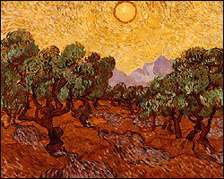

The Minneapolis Institute of Arts
Main Menu ~ Permanent Collection List ~ Interactive Museum Maps ~ Back ~ Next
European 19th- & 20th-Century Art
 (c) 51k
An outstanding collection of French Impressionist art is complemented by Fauve and Cubist works by Pablo Picasso, Georges Braque, and Henri Matisse paintings and others.